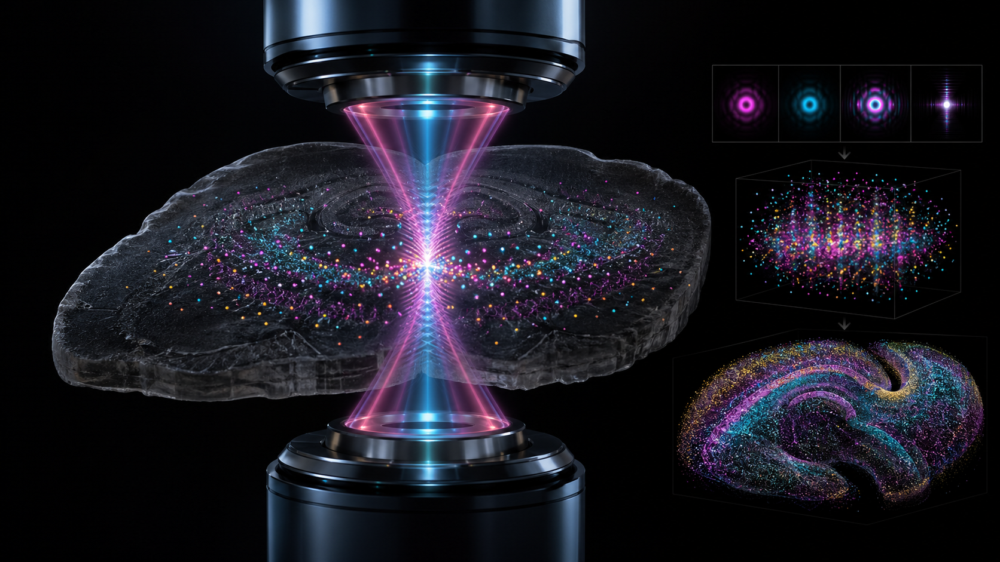

MATLAB toolbox for 4Pi-SMSN reconstruction
4Pi-BRAINSPOT
In situ PSF retrieval, dynamic interferometric correction, and GPU-accelerated 3D single-molecule localization for ultra-high-resolution imaging through brain sections.
Reconstruction pipeline
From interferometric raw data to 3D molecular maps
4Pi-BRAINSPOT builds an in situ 4Pi-PSF model directly from experimental single-molecule data, reducing data-model disparity before localization and volume rendering.
- 01Setup and import
Configure optical parameters, camera metadata, and four-channel image stacks.
- 02Channel alignment
Register the p and s detection paths with affine calibration.
- 03In situ PSF retrieval
Segment isolated emitters and retrieve channel-specific 4Pi pupil and PSF models.
- 04Dynamic correction
Estimate cavity phase drift and objective misalignment during acquisition.
- 053D localization
Run GPU localization, quality filtering, drift correction, and volume alignment.
In situ modeling
Derives 3D PSF models from acquired molecular datasets instead of relying only on premeasured beads.
Dynamic updates
Tracks interferometric aberrations introduced by cavity phase changes and objective misalignment.
Complete MATLAB GUI
Covers calibration, retrieval, localization, post-processing, and axial color-coded visualization.
Supplementary media
Interactive result previews
Run locally
Install the toolbox in MATLAB
Download the repository, open 4Pi-BRAINSPOT toolbox/main.m, verify that the support path points to the included Support folder, then run the GUI in MATLAB R2019b or later on Windows.
Requirements
- Windows 7 or later, 64-bit
- MATLAB R2019b, 64-bit
- CUDA 7.5 compatible GPU driver for localization